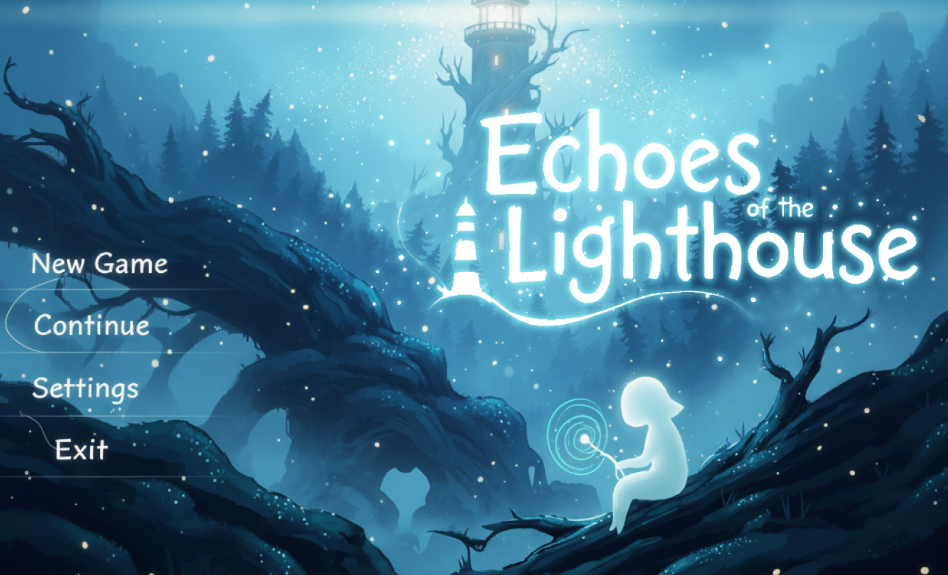
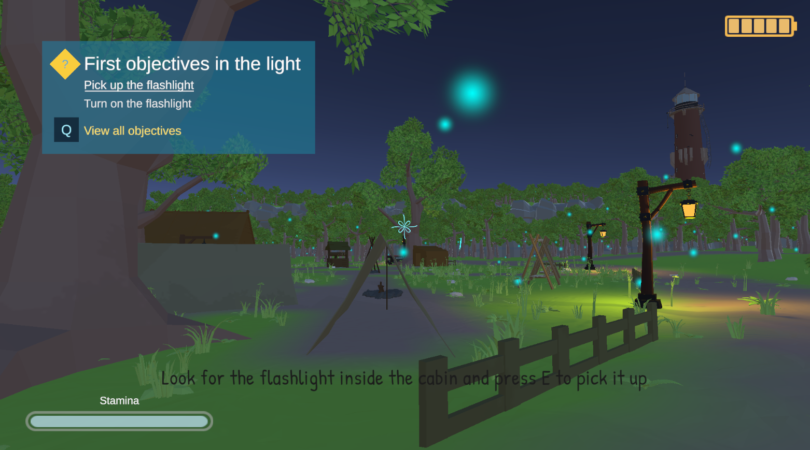

Project Case Study
Echoes of the Lighthouse
An open-world 3D exploration and puzzle game combining atmospheric storytelling, sound-guided navigation, and digital-asset integration.

Project evidence
The concrete creative contribution shown in the project materials.
Project visuals
The title artwork establishes the game’s mysterious atmosphere, while the gameplay view shows its objective system, low-poly environment, lighting, and lighthouse landmark.

The experience
Players explore an open environment shaped by a mysterious lighthouse, uncovering narrative details and solving puzzles through observation and sound.
The creative direction
The world uses environmental storytelling and sound-based navigation to make exploration feel deliberate, atmospheric, and connected to the game’s central mystery.
My contribution
- Developed visual concepts for the game world.
- Contributed 3D art and environmental presentation.
- Supported atmosphere, storytelling, and puzzle readability.
- Worked with the team to keep art aligned with gameplay.
Core features
- Open-world 3D exploration
- Environmental and narrative puzzles
- Sound-guided navigation
- Immersive visual storytelling
- NFT-based digital asset integration
Challenge and response
Atmospheric environments can obscure gameplay cues. I focused on visual contrast and recognizable environmental landmarks so the art supports navigation instead of competing with it.
What I learned
This project developed my understanding of 3D composition, environmental storytelling, art-to-gameplay collaboration, and maintaining a consistent visual world.
Want to discuss this project?
I can walk through the visual direction and game-art decisions during an interview.